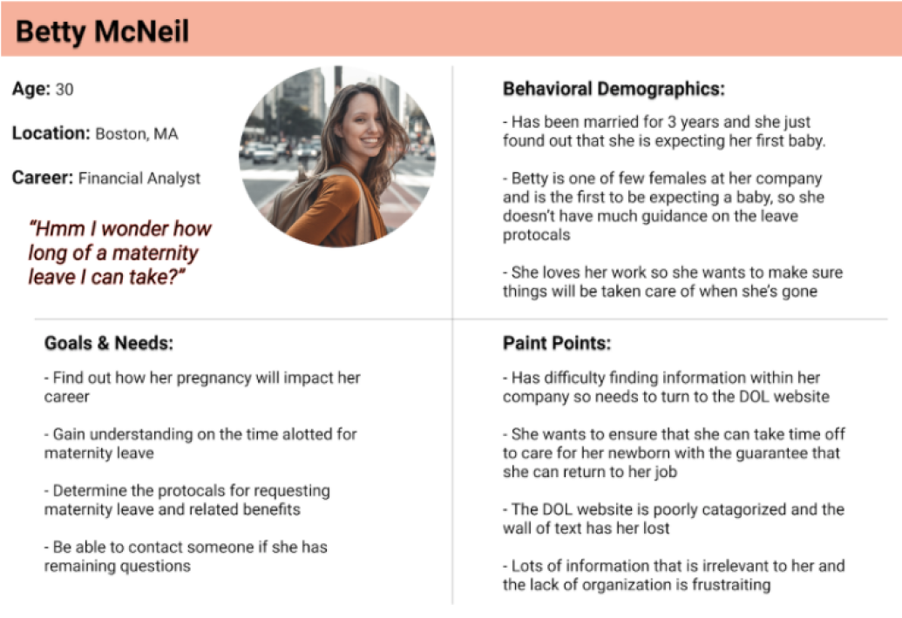
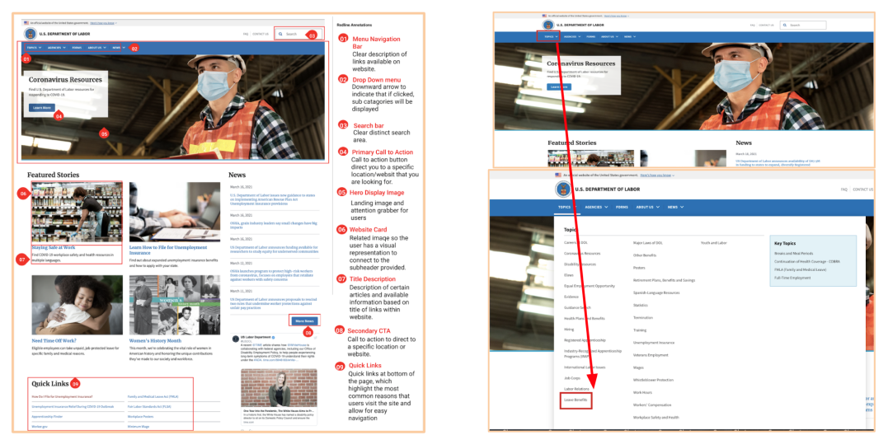
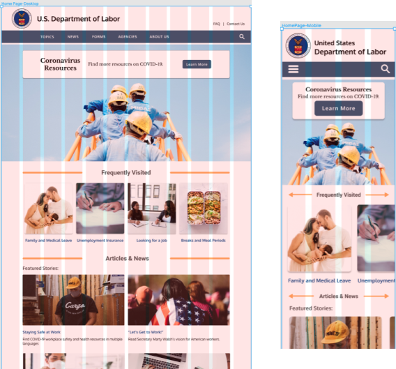
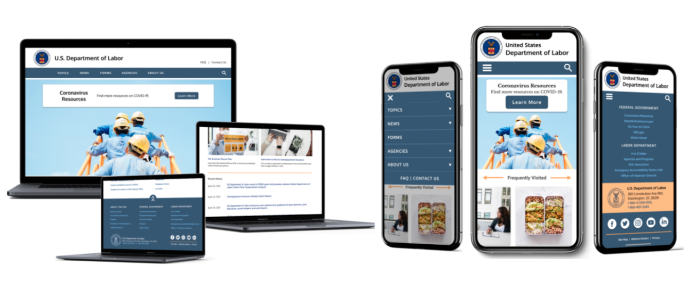

The Department of Labor is a U.S. government agency with a mission “to foster, promote, and develop the welfare of the wage earners, job seekers, and retirees of the United States; improve working conditions; advance opportunities for profitable employment; and assure work-related benefits and rights.”


Summary

Discover



Define

Design



Deliver


